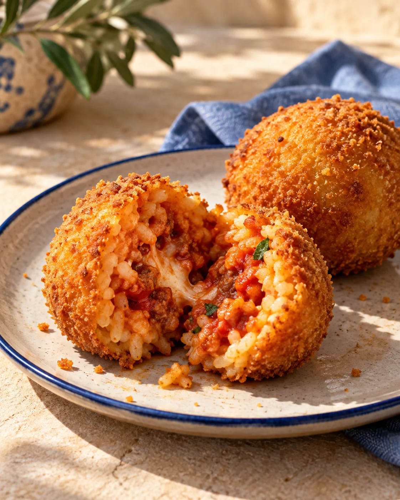
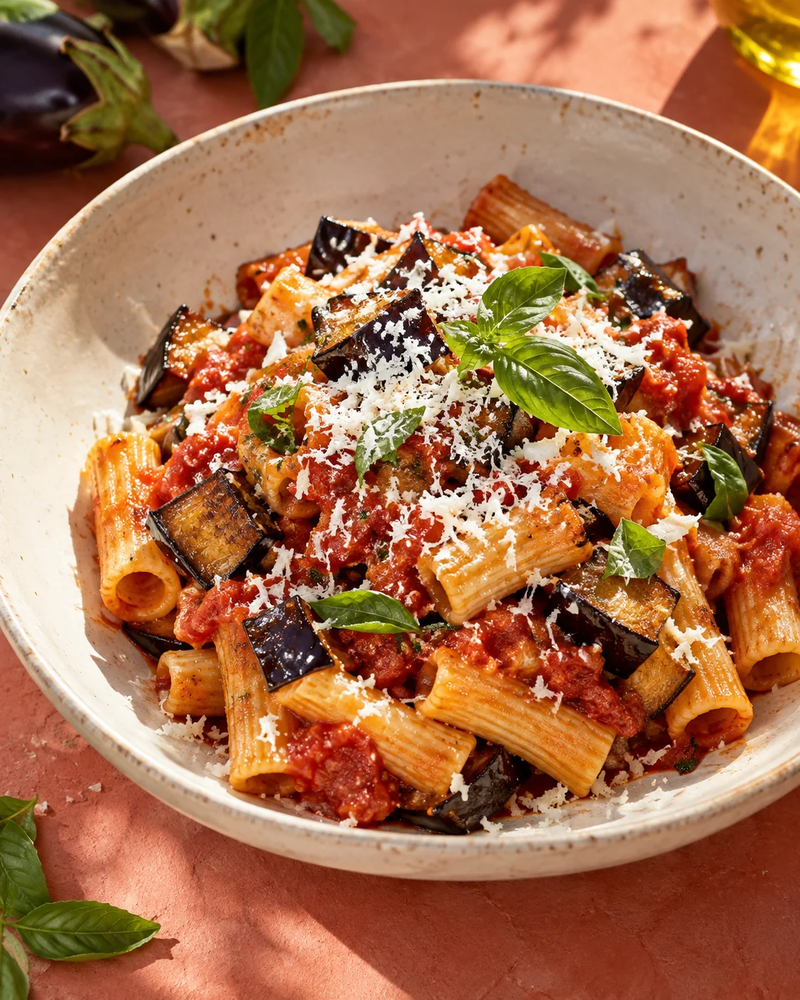

IL PRIMO ASSAGGIO01 / SICILIA
Arancini
Il lato più sfizioso della Sicilia.
CUCINA SICILIANA · CIVIDALE DEL FRIULI
IL GUSTO DI STARE INSIEME
I sapori dell’isola.
Il piacere di stare insieme.
TRATTORIA IPPOLITO
Via Gagliano 64 · Cividale del Friuli
01 / I SAPORI
Fritti, primi, dolci.
Il gusto parla siciliano.
Il lato più sfizioso della Sicilia.

Un accento siciliano,
anche lontano dall’isola.
QUATTRO SAPORI, UN’ISOLA.
Una selezione di sapori, non il menù completo. Per le proposte del giorno e la disponibilità, contatta il locale.
Chiedi cosa c’è oggi02 / SICILIA IN FRIULI
DUE TERRE. UNA TAVOLA.A Cividale, la cucina siciliana incontra un’accoglienza calorosa e familiare. Ci si siede, si condivide, si sta bene.
Il bello è03 / IL LATO DOLCE
UN PICCOLO RITUALE SICILIANOLascia un posto
alla dolcezza.
La Sicilia sa come farsi ricordare.
Ippolito su Instagram04 / CI VEDIAMO A TAVOLA
CIVIDALE DEL FRIULI, UDLa Sicilia è
più vicina.
Anche da asporto · Parcheggio disponibile
Per gli orari aggiornati, contatta il locale.
Per allergie o esigenze alimentari, contatta direttamente il locale.